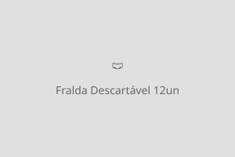
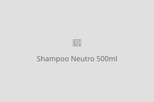

Higiene e Limpeza
Produtos essenciais para manter a higiene e o bem-estar do seu pet!
Tapete Higiênico Super Absorvente — 30 unidades

Descrição: Tapete higiênico descartável com 5 camadas de proteção e gel super absorvente. Neutraliza odores e mantém a superfície seca por mais tempo. Ideal para filhotes em fase de treinamento ou para cães que ficam em ambientes internos. Tamanho de cada tapete: 60cm x 60cm.
Quantidade: 30 unidades por pacote
Valor: R$ 49,90
Fralda Descartável para Cães — 12 unidades

Descrição: Fralda descartável com ajuste elástico para cães de porte pequeno e médio. Possui indicador de umidade que muda de cor quando está na hora de trocar. Material macio e hipoalergênico, garantindo conforto e proteção. Ideal para fêmeas no cio, cães idosos ou pós-operatório.
Quantidade: 12 unidades por pacote
Tamanhos disponíveis: P, M, G
Valor: R$ 39,90
Shampoo Neutro para Cães e Gatos — 500ml

Descrição: Shampoo neutro com pH balanceado, desenvolvido especialmente para a pele sensível de cães e gatos. Fórmula suave com extrato de aloe vera e camomila, que limpa sem ressecar. Proporciona pelagem macia, brilhante e com perfume suave. Livre de parabenos e sulfatos.
Volume: 500ml
Valor: R$ 29,90